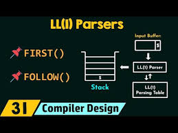

This Inventory Management System, built in Java, helps businesses efficiently manage and track their stock levels, sales, and purchases. It allows users to add, update, delete, and view product details, manage inventory stock, and generate reports. With a user-friendly interface, this system ensures accurate and real-time tracking of inventory, improving operational efficiency and minimizing errors.
Quiz Game in ASM 16-Bit
This Quiz Game, developed in 16-bit Assembly, challenges players with multiple-choice questions and tracks their score. The game features a simple text-based interface, where users select answers and receive immediate feedback. Designed for low-level programming, it showcases efficient use of memory and processor operations in Assembly language.
Hospital Management System in C++ console
This Hospital Management System, developed in C++, is a console-based application that efficiently manages patient records, appointments, and billing. It uses linked lists to dynamically store and retrieve data, ensuring smooth management of patient information. The system allows users to add, update, and delete patient details, making it an effective tool for hospital administration.

LL-1 Parser in HTML, CSS & JavaScript
This LL(1) parser, developed using HTML, CSS, and JavaScript, is a tool for parsing context-free grammars in a left-to-right, top-down manner with one lookahead token. The parser takes input in the form of a grammar and a string, processes them, and determines if the string is valid according to the grammar. The interface is user-friendly, with real-time syntax highlighting and step-by-step parsing visualization.